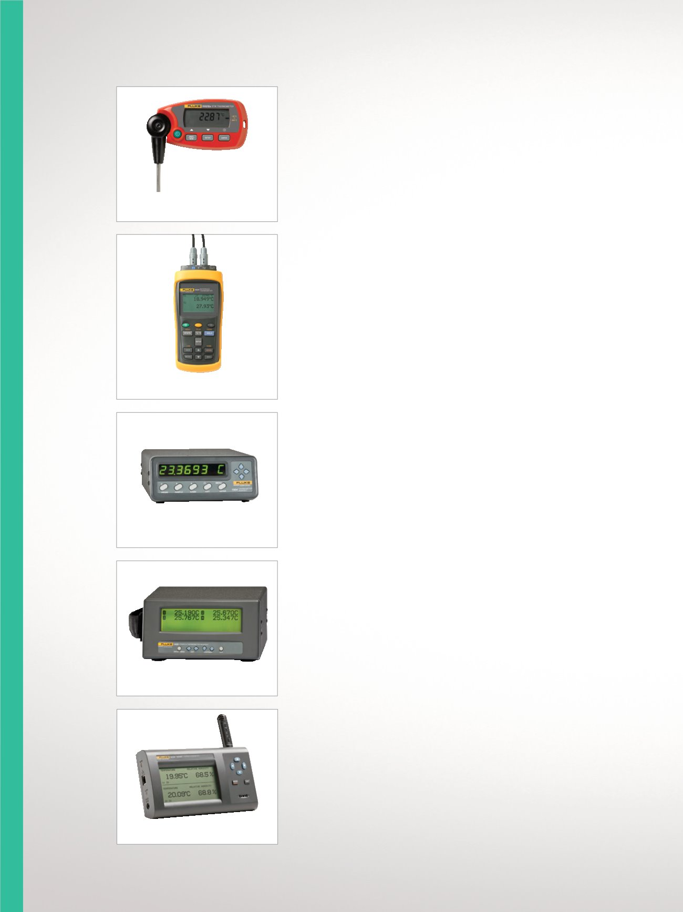

1551A Ex/1552A Ex
1502A/1504
1529
1523/1524
20
Temperaturkalibrierung
Hochgenaue Tempe-
raturmessgeräte
Außergewöhnliche Genauig-
keit, großer Messbereich und
für die Mitnahme an Ihren
Arbeitsplatz konzipiert.
Thermometer 1551A
Ex/1552A Ex „Stik“
Der beste Ersatz für Präzisionsther
mometer mit Quecksilberfüllung.
•
Genauigkeit von ±0,05 °C
(±0,09 °F) über den vollständigen
Bereich
•
Eigensicher (gemäß ATEX
und IECEx)
•
Zwei Modelle zur Auswahl
(–50 °C bis 160 °C oder –80 °C
bis 300 °C)
•
NVLAP-akkreditiert, NIST-
rückführbare Kalibrierung
Tragbare Thermometer mit
Digitalanzeige 1523/1524
Für die Messung, Darstellung und
Aufzeichnung von drei Sensortypen
mit einem Gerät.
•
Hohe Genauigkeit: PRTs:
±0,011 °C; Thermoelemente:
±0,24 °C; Thermistoren:
±0,002 °C
•
Einfache Benutzeroberfläche zur
schnellen Trenderkennung
•
Intelligente Anschlüsse zum
automatischen Laden von
Messfühlerinformationen
•
Rückführbare Kalibrierung als
Standard -CAL-Versionen mit
zertifizierter Kalibrierung
Thermometer-Anzeigen
1502A/1504
Thermometer mit bester Leistung
in ihrer Preisklasse.
•
Einkanal-Referenz- Thermometer,
Genauigkeit bis ±0,006 °C
(nur Messung)
•
Zwei Modelle zur Auswahl–Mess-
werte für PRT oder Thermistor
•
Bestes Preis-/Leistungsverhältnis
•
Kalibrierzertifikat aus
akkreditiertem Labor
Vierkanal-Thermometer mit
Digitalanzeige 1529
Genauigkeit in Laborqualität auf
vier Kanälen für PRTs, Thermisto-
ren und Thermoelemente.
•
Genauigkeit von ±0,0025 °C
(nur Messung)
•
Anzeige von acht
benutzerdefinierten
Datenfeldern für jeden Kanal
•
Protokollierung von bis zu 8000
Messwerten mit Zeit-
und Datumsstempel
•
Kalibrierzertifikat aus
akkreditiertem Labor
Umgebungszu-
standsüberwachung
Für die präzise Messung
und Aufzeichnung der
Umgebungstemperatur und
Luftfeuchtigkeit an beliebigen
Kalibrierorten.
Temperatur- und Feuchtig-
keits- Messgerät 1620A
Der genaueste grafische
Temperatur- und Feuchtigkeits-
Datenlogger auf dem Markt.
•
Herausragende Genauigkeit
•
Netzwerkfähig
•
Leistungsstarke Protokoll-
und Analysewerkzeuge
•
Messung von Temperatur bis
±0,125 °C und Feuchtigkeit bis
±1,5 % auf zwei Kanälen
•
Per NIST rückführbare, NVLAP-
zertifizierte Temperatur- und
Feuchtigkeitskalibrierung
1620A